무엇을 보나요: 11/11~11/12에 개발이 먼저 넣은 것입니다. 기획서에 없던 규칙·연출·화면입니다. 어떻게 답하나요: 번호마다 OK 또는 고쳐 주세요(+이유)만 적어 주세요. 꼭 볼 것:규칙 변경 표시가 붙은 3개입니다. 나머지는 보이는 모습만 바뀌었습니다. 되돌리기: 모두 되돌릴 수 있습니다. "고쳐 주세요"가 나오면 11/16~17에 고칩니다.
1. 한눈에 보는 목록
번호
구역
바뀐 것
종류
R1
전투
방어 = 보호막 8 (예전: 방어 +8)
규칙 변경
R2
전투
전투 순서 띠 늘 10칸 (예전: 다음 라운드까지만)
규칙 변경
R3
전투
추스르기 동작: 한 번에 HP 20% 이상 맞을 때
기준 확인
R4
전투
고른 행동 빨간 테두리 · 취소 방법
화면
R5
전투
차례 카드 밝게, 나머지 어둡게
화면
R6
전투
아군 대상을 아래 캐릭터 카드로도 고름
조작
R7
전투
받은 동작 10개 연결 (방어·강화·회복 등)
연출
R8
전투
퇴각: 돌아서서 물러난 뒤 사라짐
연출
R9
전투
승리 창에 얻은 아이템 그림 + 등급 색
화면
R10
전투
런던 시내 전투 배경 · 가로등 불빛
배경
R11
이동
이동 시점: 낮추고 다가감 + 이동 방향 따라 돎
카메라
R12
이동
구조물 칸: 말은 입구 앞 · 가리는 건물 반투명
화면
R13
이동
주사위: 옆에서 굴림 → 오른쪽으로 옮김 · "이동 N"
연출
R14
공통
시간대마다 빛·안개 색
연출
R15
공통
알림: 줄 서서 하나씩 · 종류별 색
화면
R16
공통
대화 창 아무 곳 클릭 = 다음 줄
조작
R17
조우
적 3D 모델 · 여러 종류면 화면 나눔
화면
R18
공통
메인 메뉴 로고 · 배경
화면
R19
아이템
아이템 그림 통일 · 종류 아이콘 · 등급 색 6가지
화면
R20
아이템
가방 설명 카드 큰 그림 · 목록 줄 작은 그림 · 증거품 그림
화면
R21
공통
가독성: 작은 글자 키움 · 회색 글 밝게
화면
2. 전투 — 규칙이 바뀐 것 (꼭 봐 주세요)
R1방어 = 보호막 8 규칙 변경
예전: 방어를 누르면 물리·마법 방어 +8. 화면에 "+8"만 떠서 무슨 뜻인지 몰랐습니다.
지금: 보호막 8. 피해를 HP보다 먼저 받습니다. 다음 자기 차례가 오면 사라집니다.
예) 아벨 모로 18 피해 → 보호막 -8, HP -10.
부식·무기 파손 면역은 그대로입니다. System.md 162줄도 고쳤습니다.
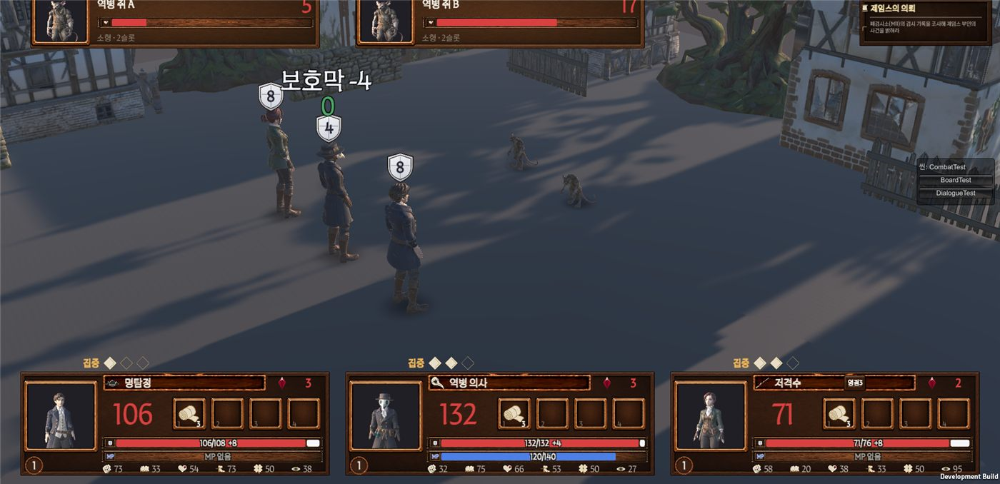
HP 바 끝 흰 칸 "+8", 머리 위 방패
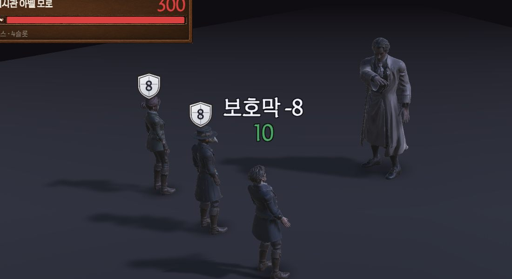
18 피해 → 보호막 8 막음, HP 10 깎임
답: ☐ OK ☐ 고쳐 주세요 (숫자 8 ☐ 그대로 ☐ ___)
R2전투 순서 띠 늘 10칸 규칙 변경
10/26 기획: 다음 라운드까지만 보여 줌. 그래서 띠 오른쪽이 비는 때가 많았습니다.
지금: 늘 10칸. 모자라면 그다음 라운드 예상(R3·R4…)까지 채웁니다.
한 차례가 끝나면 칸이 왼쪽으로 한 칸 미끄러집니다 (0.42초, 디자인 패키지 그대로).
답: ☐ OK ☐ 다음 라운드까지만으로 되돌림
R3추스르기 동작 기준 기준 확인
3D 쪽이 요청서에 없던 "맞은 뒤 몸을 추스르는" 동작을 보내 줬습니다.
지금: 한 번에 최대 HP의 20% 이상 맞으면 나옵니다. 작은 피해마다 나오면 산만해서 기준을 뒀습니다.
답: ☐ 20% 그대로 ☐ 다른 값 ___% ☐ 빼기
3. 전투 — 화면·연출
R4고른 행동 빨간 테두리 · 취소
고른 스킬·공격·소모품 칸에 빨간 테두리. 같은 줄 나머지는 어둡게.
취소: 같은 칸 다시 누르기 · 우클릭 · Esc. 취소하면 "○○ 취소됨" 안내.
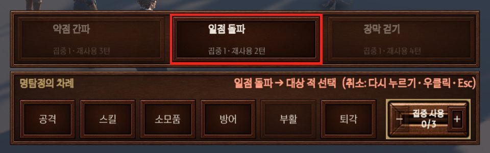
고른 스킬
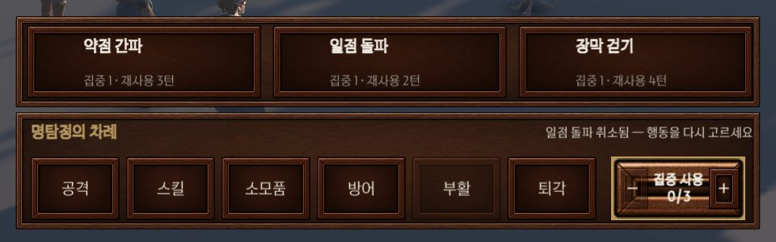
취소했을 때
답: ☐ OK ☐ 고쳐 주세요
R5차례 카드 밝게
차례가 아닌 카드는 전체를 어둡게. 지금 차례 카드는 금 테두리를 둘러 조금 크게.
보드(이동)에서는 어둡게 하지 않습니다.
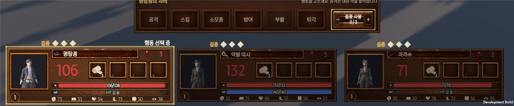
답: ☐ OK ☐ 고쳐 주세요
R6아군 대상을 캐릭터 카드로도 고름
문제: 회복·강화·아이템·부활은 전장 모델을 눌러 골랐는데, 가운데 행동 창이 모델을 가렸습니다.
지금: 고르는 동안 아래 카드에 "▼ 대상 선택" 금 테두리. 카드를 눌러 고릅니다. 못 고르는 카드는 어둡게.
전장 모델 클릭도 그대로 됩니다.
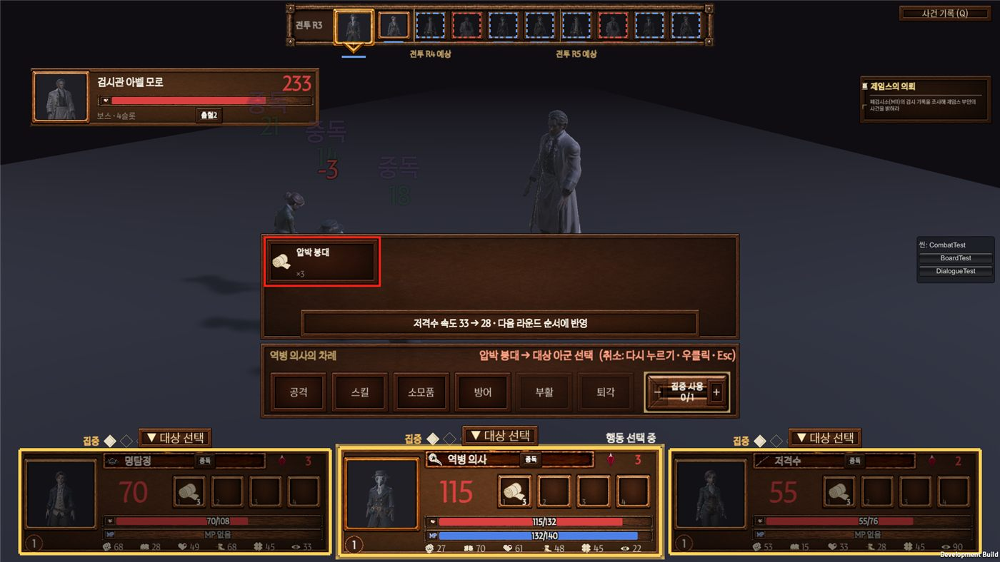
답: ☐ OK ☐ 고쳐 주세요
R7받은 동작 10개 연결
동작
언제 나오나
방어
방어 버튼
강화
상태를 거는 스킬
회복
회복·정화 스킬 (역병 의사)
아이템
소모품 (화염병 포함)
부활
누운 자세에서 일어섬
추스르기
R3 기준
보스 예고
아벨 모로가 큰 공격을 예고할 때 (1초)
금지된 봉합
아벨 자기 회복 (동작 0.9초 뒤 회복 숫자)
회피
아군이 공격을 피할 때 (MISS와 같이)
승리
마지막 적이 쓰러지면 0.4초 뒤 서 있는 아군 모두 → 1.5초 뒤 결과 창
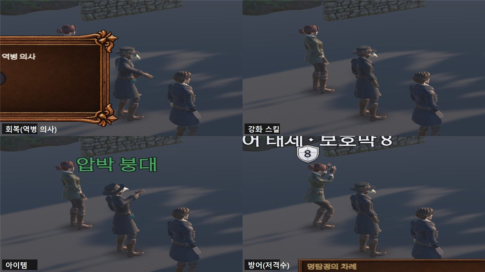
답: ☐ OK ☐ 고쳐 주세요 (번호·동작 이름)
R8퇴각 · 탈출권 연출
예전: 그 자리에서 순간 사라짐.
지금: 돌아서서 뒤로 물러난 뒤 사라짐 (0.7초). 새 3D 동작은 안 썼습니다.
답: ☐ OK ☐ 고쳐 주세요
R9승리 창에 얻은 아이템
얻은 아이템을 결과 창 아래 띠에 한꺼번에 보여 줍니다. 칸마다 그림 + 등급 색 이름 (최대 4칸).
아이템마다 알림은 띄우지 않습니다 (화면이 이미 복잡해서). 알림은 "전리품 N개 획득" 한 줄 그대로.
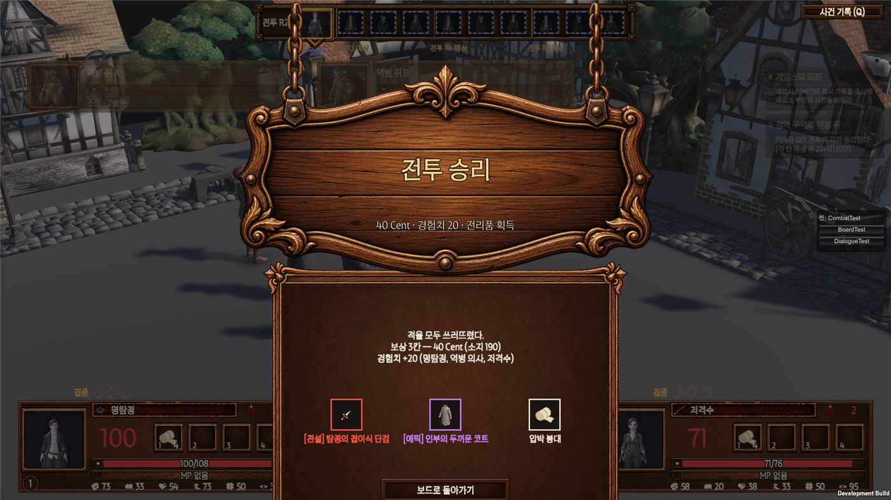
전설 무기 빨강 · 에픽 코트 보라 · 붕대 흰색 (점검용으로 넣은 보상)
답: ☐ OK ☐ 고쳐 주세요
R10런던 시내 전투 배경 · 가로등
받은 소품 6종을 놓았습니다: 돌길 인도 · 가로등 · 벽 가로등 · 손수레 · 하수구 · 나무 울타리.
가로등은 가스등처럼 켜짐: 아침 25% · 낮 꺼짐 · 저녁 70% · 새벽 100%. 런던 시내 전투에만.
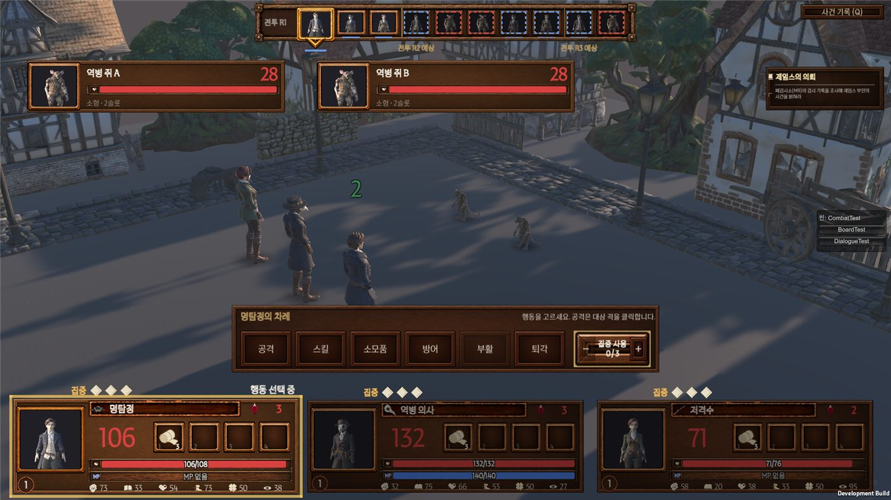
낮
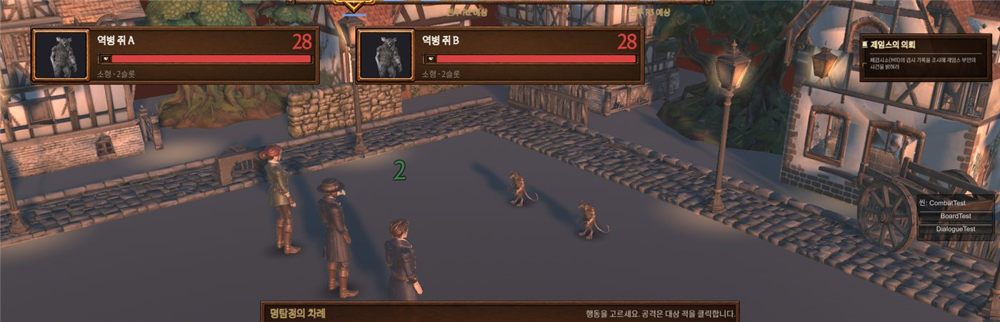
저녁 가로등
답: ☐ OK ☐ 고쳐 주세요
4. 이동(보드)
R11이동 시점
예전: 52° 위에서 16m 떨어져 내려다봄. 말이 작고 멀었습니다.
지금: 40°로 낮추고 11m로 다가감. 이동 방향을 따라 천천히 돎 (초당 최대 70°).
이동 중 확대(C안)는 화면 끊김 걱정으로 안 했습니다.
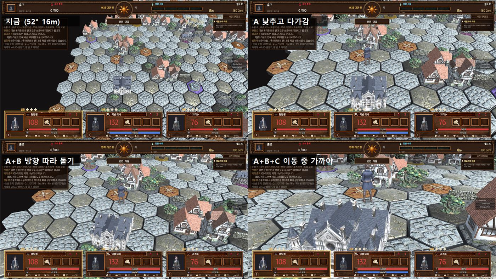
사진 속 "지금(52° 16m)"은 바꾸기 전. 왼쪽 아래 "A+B"가 지금 게임. 오른쪽 아래 C는 안 씀
답: ☐ OK ☐ 고쳐 주세요
R12구조물 칸 · 가리는 건물
거점·우물·분수·출구 같은 밟는 칸 구조물은 칸 안 뒤쪽으로. 말은 입구 앞에 섭니다.
말을 가리는 건물은 그동안만 반투명. 안 가리면 원래대로.
답: ☐ OK ☐ 고쳐 주세요
R13주사위
예전: 위에서 갑자기 떨어지고 끊겨 보임. 멈춘 뒤 말 위에 남아 칸을 가림.
지금: 옆에서 던져 굴림. 눈을 1.3초 보여 준 뒤 화면 오른쪽으로 작게 옮김. 아래 "이동 N" 글자 (피의 사냥 −2 등으로 눈과 다를 때 알기 쉽게).
도착하면 치웁니다.
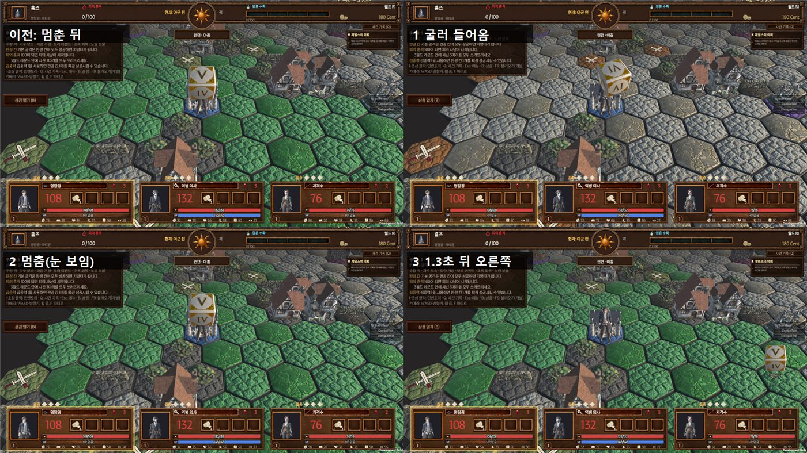
답: ☐ OK ☐ 고쳐 주세요 ("이동 N" 글자 ☐ 둠 ☐ 뺌)
5. 공통 화면
R14시간대마다 빛·안개
월드 라운드마다 아침 → 낮 → 저녁 → 새벽. 빛 색·세기, 안개가 2초에 걸쳐 바뀜.
규칙은 그대로입니다. 가장 어두운 새벽도 빛 60% 아래로 안 내립니다. 아벨전은 전용 조명.